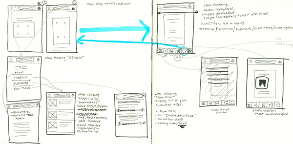
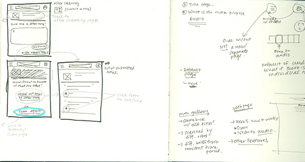
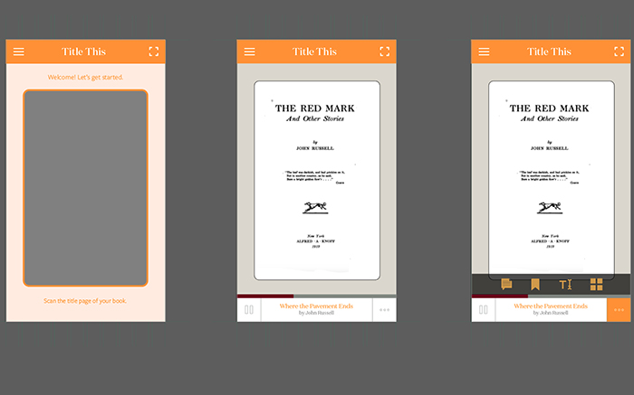
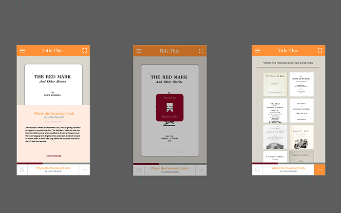
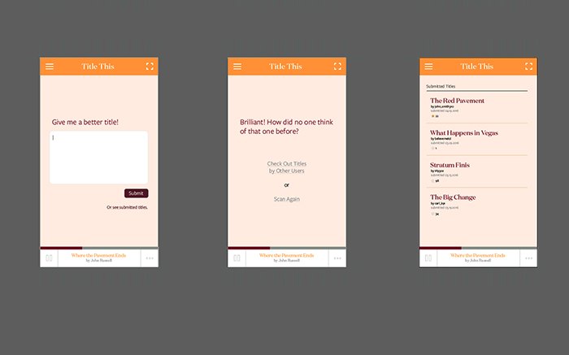

Identifying keywords and ideas of the original article, and doing very first sketches of the UX mockup.
Identified keywords included history, chronology, drafts, editions and representation.
As for the initial mockups, I was able to identify scanning and generating podcast as the primary feature of the app, then formulated a set of secondary features, including liking or saving titles and tracks.
Notes from class crit. There was a lot of emphasis on making the app more engaging and able to sustain viewership. What other ways could the user engage with the app? If the function of the app was limited to just scanning the title page and getting relevant information, how likely is it for the user to use the app more than once?
I also did some further analysis of examples from the original content and was determining which book and title(s) to use as a case study, as well as created a flow chart to map out how the user to navigate the app.
A more detailed mockups, elaborating on the specific assets and featues of the app.
 These are the mockups created on Illustrator to fully demonsrate the capabilities of the app.
On the far left is the transcript of the podcast on view. On the center, the bookmarking option, and the right, photo gallery.
This shows the full sequence of the feature that entails submitting and reading submitted titles.
